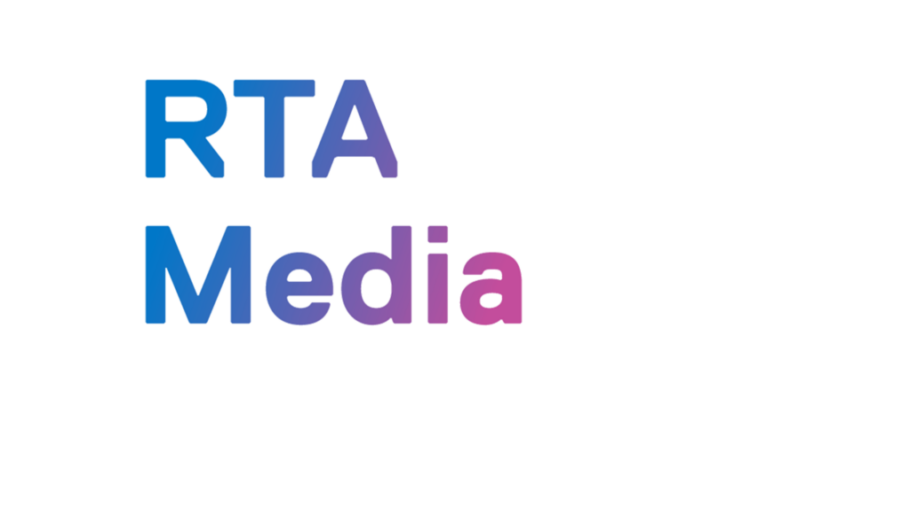
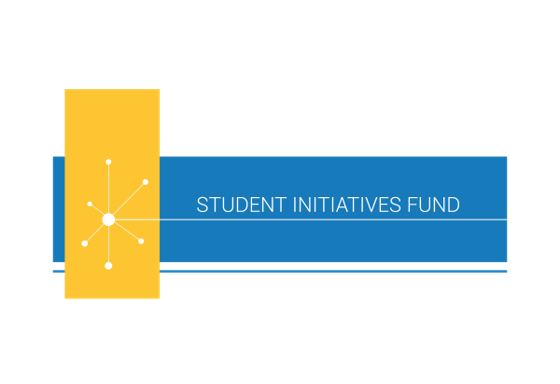

Mass Exodus / 2024
SLATE

Mass Exodus is the School of Fashion’s annual end-of-year production that celebrates and showcases the achievements and creativity of final-year Fashion students at Toronto Metropolitan University.
The event is made up of both an Exhibition and Runway Show where students’ capstone projects are displayed and presented to audience members and attendees.
13 / 04 / 2024

01 / 05
Concept
Define the central idea, purpose, audience, tone, and intended experience. Gather references, study the audience, assess precedents, and establish the cultural or strategic context.
About the Show
In its simplicity and durability, SLATE serves as a pristine canvas, presented as a base, and a starting point devoid of excess. We intend to use this base as an invitation for the students to inscribe their narratives upon it. This event aims to offer a refined platform where the essential qualities of slate inspire creativity and personal interpretation.
Students are encouraged to project their stories and perspectives, utilizing the next-to-blank slate to support and display their concepts. The show’s design will be stripped to its core and polished to excellence, leaving room for the diversity of ideas that designers will bring to the surface.

Branding
Narrative / Inspiration / Theme / Logo / Colours & Text
02 / 05
Development
Translate the concept into a visual identity, narrative, programming direction, spatial approach, and initial event format. Set the scope, budget, timeline, venue requirements, team structure, permissions, and technical needs.
Master Document / Assets
As Creative Director it was crucial to my role that I established a concrete visual direction for the encompassing team. I created the master document for ease of access, and to utilize for a cohesive look and feel.
Included all primary elements, the most notable being color swatches, typefaces, and textures to be utilized across all platforms.
Logo + 3d Iteration
Collaborating with fellow Branding & Design Department members, we crafted the events logo by adapting the standard variant into a stamped iteration, in line with our theme's raw and stripped-back aesthetics.
Space & Experience
Exhibition / Runway Show / Installation
- Exhibition
- 3rd floor
- Runway Show
- 8th floor


Final Deliverables
03 / 05
Production
Finalize the environment, graphics, communications, programming, installations, materials, and production specifications. Confirm vendors, contributors, schedules, logistics, audience communications, ticketing, invitations, and promotional rollout.
General Posters
Using a combination of Illustrator and Photoshop, I created the general posters for the event with provided raw photography from the image + video department.


Broadcast Holding Animation + Renders
Used Clo3d to create various mockups of concepts for the event including wristbands, exhibition props, and merchandise, to better contextualize the look and feel of certain aspects through rapid prototyping and visualization.
Using the same software, created the holding animation to be played during the live streams before every show.


04 / 05
Installation
Build the space, test technical systems, rehearse, brief the team, resolve issues, and prepare for opening.
Product Development / Muslin / Cut Video
Collaborated with all departments - Show, Exhibition, Image & Video, etc to guide muslin direction for draping and product.
Coordinated with Design & Technology Lab for printing and explored various techniques; landing on FoamCore and Cardboard as the final application.
We were particularly pleased with the draping over the wooden logo paired with the muslin pipe and drapes; something we would go on to replicate with equal effectiveness for the Mass Exodus runway.


05 / 05
Event / Reflection
Run the event, document the experience, gather feedback, evaluate outcomes, and identify what should be retained or improved.
Event
The event is made up of both an Exhibition and Runway Show where students’ capstone projects are displayed and presented to audience members and attendees.
In regards to the day of the event, I can’t imagine it going any smoother from the team's perspective, everyone was willing to help, was focused, and most importantly had a great time.
- Show One
- 12:00
- Show Two
- 2:00
- Show Three
- 4:00
Program
“10%” by Gabbi Rizzi, Adia Morgan, Ali Riaz Chaudhry, Anmol Handa, Anusha Kuhanathan, Cherry Chu, Eve Cairns, HaoCheng Weng, HuaShang Hanfu by Jade Lun, Jessica And The Glitter Girls, Kenneth Song, LEXI, Nandni Agarwal, SEA by Shan Ali, The Fool Era, Volearr by Vivian Pan
Atide by Angel Sowunmi, audsmiley by Audrey Chen, Carissa Wang, Charles Bristoll, Dy, Erin Pool, Feng Gu 风骨, Haven Liu, Isabella Lianos, Lea by Elleanna Gasparevic, Love Eleanor, MAND, Minahil Hashmi, Nuh Ali, Shadygrove by Daisy Morrison, sixnineosix by Jina Kim, Wen Shen
ACOG, Adriana Elcena, Anabelle Landry, ang kiriakos, Destiny Lowe, Eishvinder Gill, Joseph Arruejo, Karina Dulat, LostWhenFound by Kat, Meraki Marongke, Oscar’s Foreplay by Mirabelle Zhou, Pavni Chandani, Sabrina Tranfaglia, Sarah M. by Sarah Muhugusa, SideSeems, Sydney Janelle Hirtle
Credits
Branding & Design
- Joe Horne
- Creative Director
- Cassandra Sukra
- Design Team Lead
- Rojin Taki
- Design Team (general & show)
- Taya Volk
- Design Team (general & show)
- Jasmine Natan
- Design Team (general & digital)
- Tara Khoo
- Design Team (general & digital)
- Lily Sartison
- Design Team (general & exhibition)
- Cailean Cruzada
- Design Team (general & exhibition)
- Nicole Lee
- Design Team (general & exhibition)
Production — Show
- Parker Murchison
- Producer & Music + Model Training
- Paige Cameron
- Producer & Sponsorship
- Aqsaa Mumtaz
- Producer & Space/Stage Designer
- Rebecca Grabinsky
- Line Producer
- Eva Licata
- Sustainability Coordinator
- Hannah Spencer-Thompson
- Designer Liason
- Jullian Skidmore-Peck
- Production Manager
- Nell-Stessy Ganpo Nkwenkwa
- Production Manager
- Noor Halawa
- Production Manager
Production — Exhibit
- Maheen Arshad
- Producer
- Tannvie Rane
- Line Producer & Space/Stage Designer
- Evan Grundmann
- Designer Liason & Curation
- Nicole Kerr-Williams
- Production Manager
- Madison Cabioc
- Production Manager
- Priya Shiwram
- Production Manager
Public Relations / Web & Social
- Ricardo Felix
- PR Lead
- Dorsa Farzi
- PR Team
- Nasma Asfour
- PR Team
- Michaela Ferraro
- Web & Social Lead
- Hayley Dawkins
- Web & Social Team
- Ashlene Dosanjh
- Web & Social Team
- Arshiya Sahni
- Web & Social Team
Photography & Videography
- Niusha Zamanipour
- Art Director
- ThyThy Vo
- Promotion — Photography & Videography Lead
- Xingni Chen
- Photography & Videography Team
- Mia Santos
- Photography & Videography Team
Sponsors






